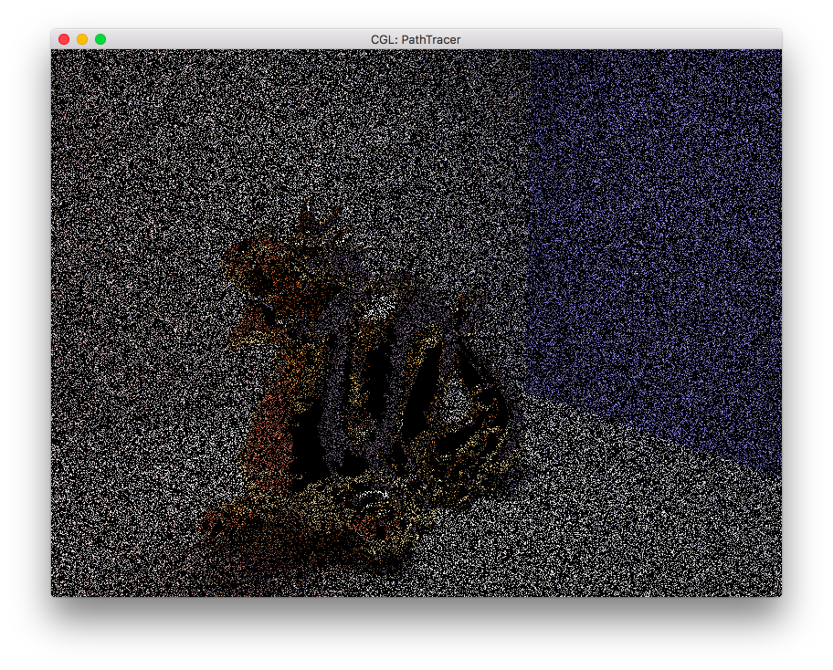
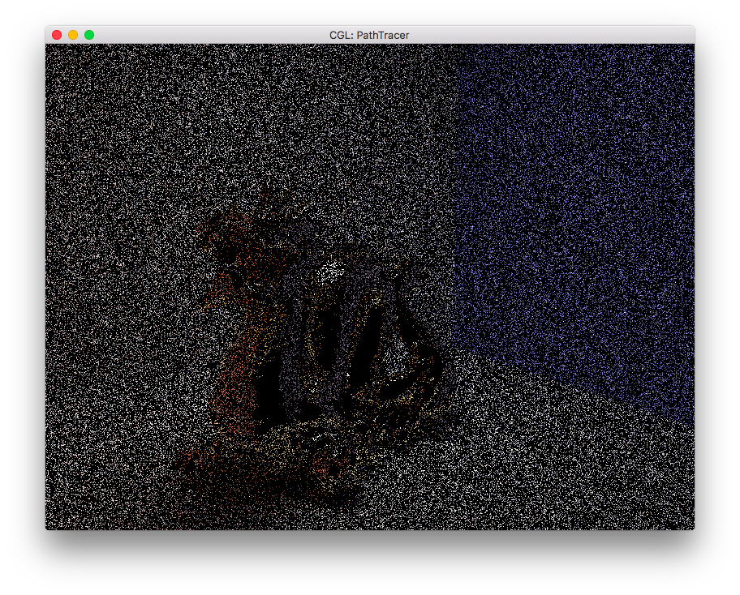
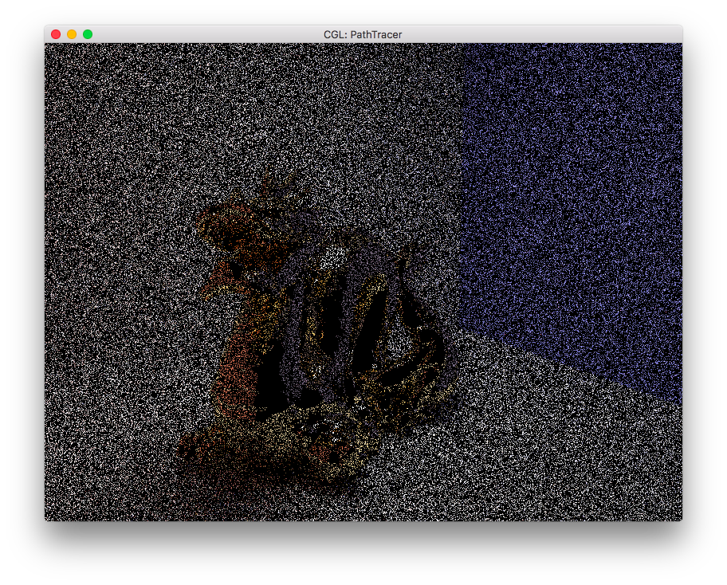
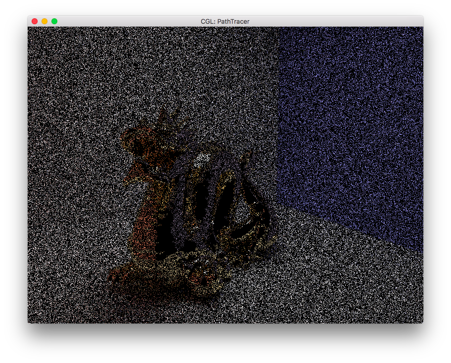
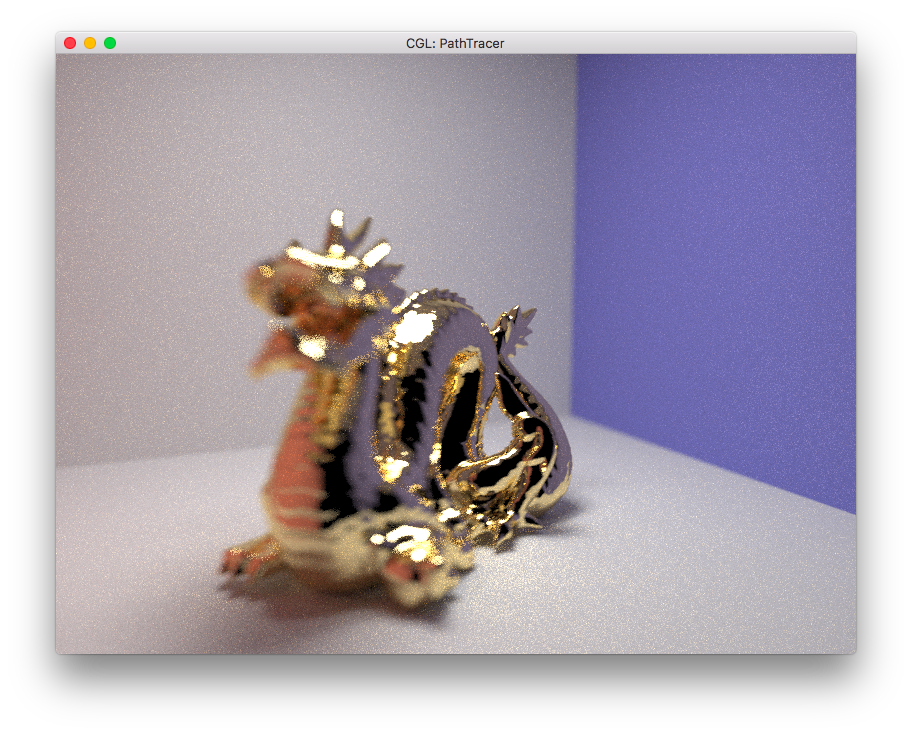
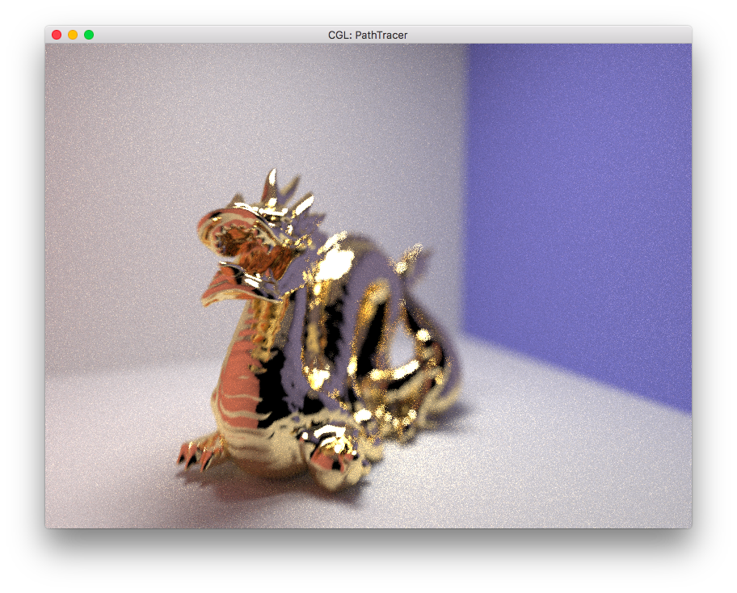
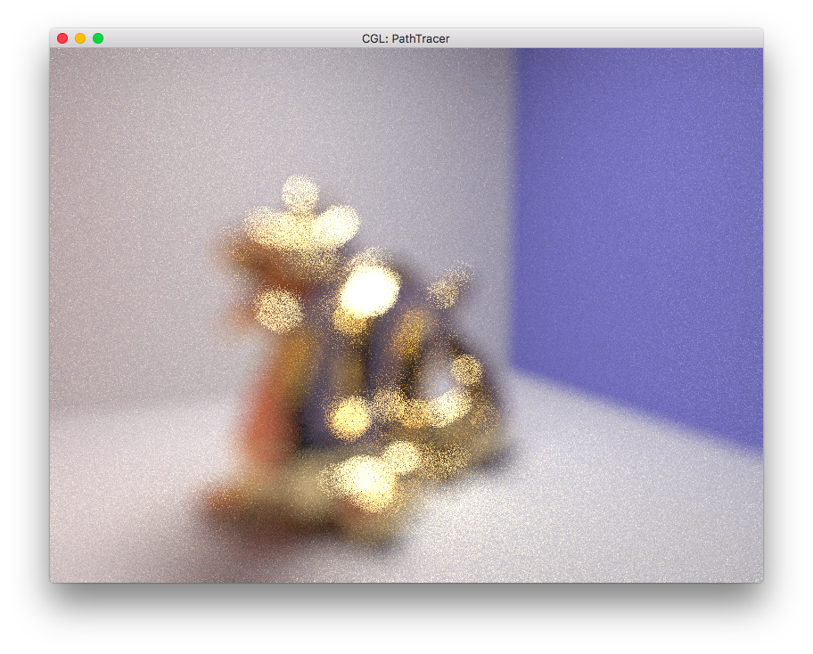

In this project, our goal was to create a simulation of a normal plenoptic camera. In order to do so, we extended upon project 3-2. Our general approach was to take the main lens simulation and split the main lens into different buckets (based off of coordinates). Each bucket would represent a microlens, so we would effectively have the microarray lens just by splitting up the main lens. Once that was in place, we were able to store a 4D light field of the rays coming into the sensor plane, and using those we were able to perform operations that refocused the image at different depths.
We started this project by reading through academic papers related to light field cameras to gain a foundation upon which to design our project. The papers that we referenced specifically are located in the references section of this webpage. We took around a week looking through various papers and documents in order to gain a better understanding of the task that lay ahead. We learned a lot about different aspects of the light field camera but quickly realized that a lot of the material that was included in the papers was more advanced and in-depth than what we needed to implement the refocusing method of light field cameras. As a result, we did not actually utilize the research papers that heavily in our actual implementation of the light field camera.
We started our implementation by writing a method inside of camera.cpp which was essentially an extended version of the method that generated rays for the thin lens implementation in project 3. We spent a decent amount of time on this implementation, trying to accurately model the internal design of a light field camera. This meant taking the lens that was already implemented in project 3, adding a microlens array that would be set back a certain distance from the microlens array, and behind the microlens array, the sensor. However, after considering the idea further, we realized that such an approach, while geometrically accurate, would be complex to implement and it would be difficult to keep track of all the necessary information. As it was, shortly after the project checkpoint, Tony had the opportunity to have a chat with Ben about our implementation as it was so far. Ben helped explain a new approach that ended up making the implementation a lot simpler and ended up being the representation that we used for the rest of the project.
The method that Ben described required us to only use the thin lens that we used in project 3 and the sensor array, essentially not requiring any change in geometry. In order to account for the microlenses we created "buckets" on the thin lens. We would choose a certain amount of microlenses that we wanted to work with and then divide the main lens into that many number of partitions. As a result, we created a method called generate_ray_for_microlens that created a ray based on this method of implementation to replace generate_ray_for_thin_lens. This method was similar to the implementation of generate_ray_for_thin_lens in that it took in coordinates in order to calculate the starting point and the direction of the ray that is to be used in raytrace_pixel. However, the method incorporated support for functionality that was necessary for the light field. We added four new variables into the ray class that we used to hold the coordinates that represented the location that the ray passed through the main lens and where it reached the sensor. We called these variables "u", "v", "s", and "t". The variables "u" and "v" represented the horizontal and vertical index of the microlens partition that the ray would pass through. The "s" and "t" variables simply represented the pixel location on the sensor. We calculated the ray and returned it much as we did in generate_ray_for_thin_lens, but made sure to include the four new variables to assist with our light field functionality later on.
We stored our lightfield in a data structure that consisted of a pair including an int and a spectrum within four nested maps. The maps would map coordinates to other coordinates and eventually the int and spectrum pair. The raytrace_pixel method was updated to include a call to an update_lightfield method that took in the four aforementioned coordinates and a spectrum, which was the result of the trace_ray call in raytrace_pixel. The update_lightfield_method searched through the maps in order to check to see if an entry with the "u", "v", "s", and "t" coordinates existed. If not, this meant that there hadn't been a ray that had been mapped through a microlens to a specific pixel. If this was the case, we would make a new entry in the lightfield data structure that took in the spectrum and an int value of "1", representing the fact that the stored spectrum was the result of 1 traced ray. If the entry did in fact exist, we would add the spectrum that was passed in to the spectrum that was stored and increment the int, which functions as a counter, by one. This data structure and method were essential to the implementation of our lightfield because they were the ways that we stored the lightfield and stored the information necessary to perform any sort of calculations post-rendering.
The value that we returned from raytrace_pixel was a spectrum for a specific pixel. We created a helper method called find_pixel_spectrum_from_lightfield in order to assist us with this process. This method looked through all the microlenses in the lightfield for a given pixel, added all the spectrums together, added all the integer counts together, and divided the total spectrum by the sum of the integer counts. This resulted in a spectrum that was the average of all spectrums that had passed through all the microlenses and reached a specific pixel. We were then able to generate images as seen from a specific microlens, shown in the results section, by taking all the pixels with given microlens coordinates and generating an image with them. The scene could then be observed from different angles depending on the location of the microlens in question.
We focused for quite some time on a refocusing method that effectively adjusted the distance between the sensor plane and the microlens and thin lens plane. However, we ran into issues with a ghosted image through rendering, noticing that there was no change in the primary image, but that a ghosted image that was dependent on the amount we were adjusting the distance by, was appearing. After being stuck on the issue for quite some time, we decided to talk to Professor Ng, who helped give some ideas on where the bug might be, as well as descibe the shift and add algorithm to us. We decided to split our efforts, and work on debugging the aforementioned method as well as implementing the shift and add algorithm. We actually got both implementations working at around the same time, but since there were still slight deficincies in the sensor plane shifting implementation, we decided to go with the shift and add algorithm as our final approach. Both implementations are discussed below.
The main idea of the sensor plane shift implementation was to determine where the new sensor plane would lie. Once this was determined, we could iterate through the lightfield in order to take every single entry and calculate where the rays that they represented would end up on the new sensor plane. We did this by calculating the direction the ray was traveling using the four coordinates that the light ray stored, calculating the new distance of the sensor, and calculating where the ray that started at the position on the lens and traveled to the new sensor plane would end up. Then, we would insert the original lens plane coordinates and the new sensor plane coordinates with the stored spectrum into a new lightfield. Once all the entries were updated, we would have a new lightfield that could be used for generating a new image that was refocused in accordance with the distance that was specified in order to adjusting the location of the sensor plane. However, we were stuck for some time with the image that was described above. We found that it was an issue that we were calculating the location that the rays would impact based on the same plane that we were using to capture the image. We fixed this issue by calculating how the plane that the rays were intersecting would scale depending on the direction and the distance in which we were moving the sensor. Essentially, we could calculate the new bottom left corner by sending a ray from the top right of the lens through the bottom left of the sensor plane, and the new top right corner by sending a ray from the bottom left of the lens through the top right of the sensor plane. Once we calculated where the rays that were stored in the lightfield would impact this newly defined plane, we could scale the coordinates of where the rays that intersected the plane from this lightfield would strike back to the ordinary plane and store it back into the lightfield. However, there were still a couple of issues with this implementation. Despite successful refocusing, it would also slightly zoom. Rather than ensuring that this implementation was entirely correct, since we had developed the shift and add algorithm in parallel and it was functioning flawlessly, we used the shift and add algorithm in our final implementation.
The shift and add algorithm ended up being easier to implement than the aforementioned method of refocusing. Once we had a good grasp of how the algorithm was meant to work, the implementation moved along fairly steadily. The implementation involved iterating through the lightfield and calculating the amount of distance that a certain value needed to be shifted, then shifting that value by that amount and storing it back into the lightfield. One issue we did run into in this implementation was a very dark image. We realized that we were adding in fully black spectrums into our lightfield. This was because of the shifting and a failure of checking the location to which we shifted certain values, which led to us adding in black spectrums which brought down the average spectrums in our lightfield, therefore making it darker. Other than this issue, the implementation ran smoothly and we were able to use the functioning shift and add algorithm for refocusing purposes.
We found this project to be very interesting. The fact that it is possible to store information about a scene, then use that information to reconstruct the scene in different ways is intriguing. We were only able to implement a refocusing functionality, but we were able to appreciate the possibilities for further development. It was also very interesting to note the different approaches that were available to us. As described above, we shifted our approach on several occasions because of certain implementations having benefits over others. It was interesting to see how there is often more than one way to approach a problem and how flexibility and adaptability can be very important when working on a project. We were faced with the decision on more than one occasion whether to continue with our method into which we had gained an understanding and spent time working on, or switching tracks and working on an alternate approach. We were able to set realistic and measurable goals and timelines for ourselves so that we were able to make informed decisions on our project development and come to the final product which we were happy with and able to confidently present at the poster session.
We were able to successfully capture the incoming rays as a light field using our buckets method. As a result, we were able to render images from each bucket, as if viewed from different microlenses. The differences are hard to see, but the viewpoint from each bucket is different. Also, our images are riddled with holes due to not having enough samples to fill in every pixel of every bucket, but the general idea is there.
|  |  |
|  |  |
After successfully rendering the light field, we were able to use the light field in order to render images focused at different locations, all via post processing (so from the original light field data that we gathered from the first rendering).
|

|

|
|
|

|
Papers: Light Field Photography with a Hand-Held Plenoptic Camera by Ren Ng, Marc Levoy, Mathieu Brodif, Gene Duval, Mark Horowitz, and Pat Hanrahan. Special thank you to Professor Ren Ng and Ben Mildenhall for guiding us down the right path and helping us whenever we needed it.
We worked on this project together for the most part, including the programming portions. Below is how it was split up a little, but for the most part the programming was done together. Albert Bierley: debugged and fixed the microlens bucket code and shift and add algorithm. Also worked a lot on the focus method tbat worked by pushing sensor back and forth (that ended up not being the approach that we demonstrated). Tony Wang: setup of microlens buckets, and wrote initial shift and add algorithm.